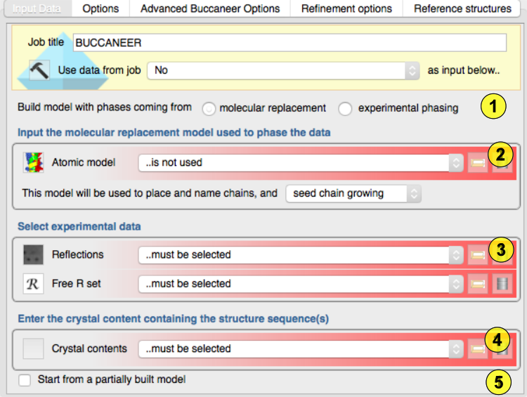
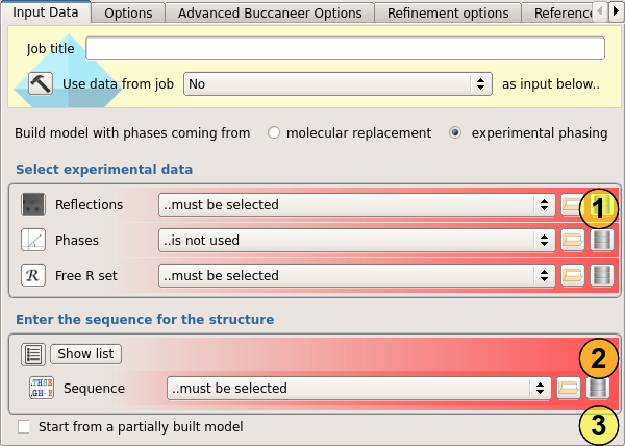
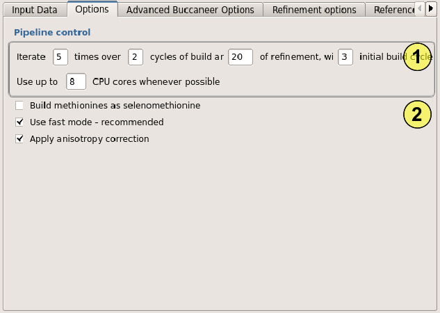
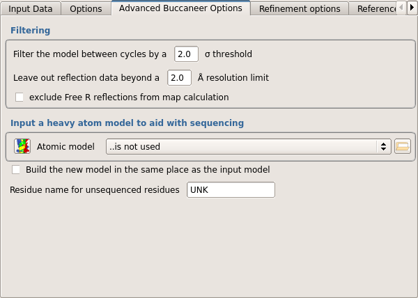
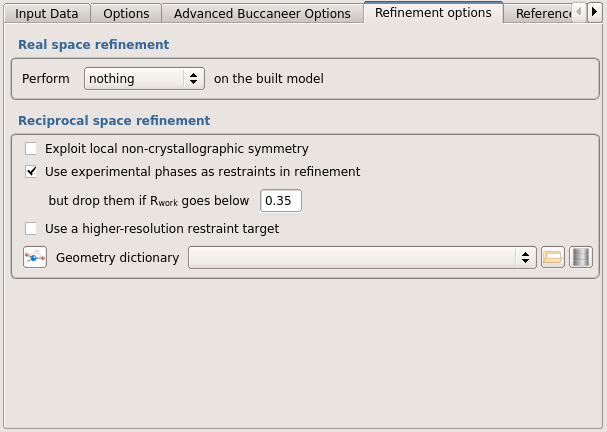
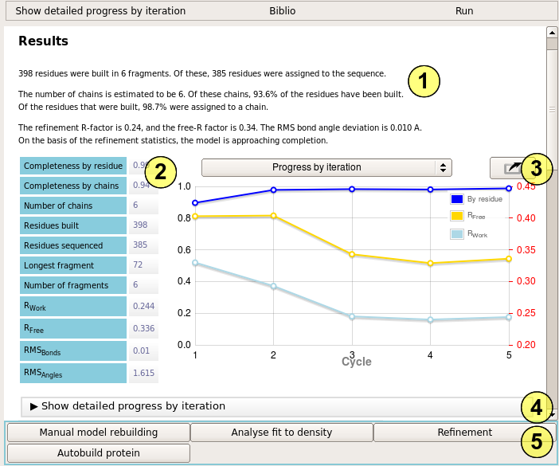

Autobuild protein (buccaneer)¶
Input¶
The “Autobuild Protein” task is used to either build an atomic model into an electron density map, or to rebuild a molecular replacement model to better fit the observations. The minimum required inputs are a the protein sequence, a set of observations, a set of Free-R flags, and either a set of phases or a molecular replacement model.

The task may be run on one of two modes: “Molecular Replacement” or “Experimental phasing”, which may be selected using the radio buttons at the top of the input window(1).
Molecular replacement mode
In molecular replacement mode, you first need to provide a molecular replacement model. The primary purpose of the model is to provide a source of phase information for the initial electron density map. However it is also used to place the new model in the unit cell and to provide chain names(2).
The molecular replacement model may also be used to aid the model building process - this is controlled by the menu below the model selector. The default option - “seed chain growing” - takes isolated residues from the molecular replacement model and uses them as starting points for growing a new model. This usually produces a fairly complete model without significant bias, and should be used for most cases.
There are two other options: “nothing else” means that the molecular replacement model is not used for model building, which minimizes the possibility of bias, at the expense of slower building and often a less complete model. “provide an initial model” uses most of the molecular replacement model as initial fragments for building. This is useful when the initial map is too poor for reliable building, but the resulting model is more biased towards the molecular replacement model.
Next the experimental data must be selected. A set of observations and a set of Free-R flags are required(3).
The contents of the asymmetric unit must be specified by choosing a AU content which should have been entered in the Define AU content task (Import .. module)(4). You can also create a AU content object on the fly by using the file browser button and selecting a sequence file - you will then see a window like Define AU content to check the input and add more sequences if necessary.
A partially built model may optionally be provided as a starting point for building. If the partial model is specified, then the molecular replacement model is only used for seeding or providing an initial model in regions where the partial model is missing(5).
Known structure features from the initial input model may be preserved. This is useful if heavy atoms, nucleotides or ligands have already been determined. The /chain/residue/atom names must be specified, with ‘*’ for wildcards, e.g. ‘/W/*/*’ preserve all atoms in chain W. If a non-zero radius is given, buccaneer will not build new atoms into the region around the known atoms.
Experimental phasing mode¶

First the experimental data must be selected. A set of observations, a set of phases and a set of Free-R flags are required(1).
Next the contents of the asymmetric unit must be specified in the form of one or more chain sequences. Each sequence need only be provided once, however many times it appears in the asymmetric unit(2).
A partially built model may optionally be provided as a starting point for building. If the partial model is specified, then the molecular replacement model is only used for seeding or providing an initial model in regions where the partial model is missing(3).
Known structure features from the initial input model may be preserved, using the same specification format as for molecular replacement model.
Options¶

The first group of options controls the model building pipeline. The only one of these you might normally change is the first: the number of build/refine iterations to be performed. If an initial model building job gives an incomplete model, rerunning with more cycles may help. While there is very rarely a benefit in using more than 20 cycles, we have seen rare examples where hundreds of cycles lead to a poor map being solved(1).
The next option controls whether ‘M’ in the sequence should be built as Methionine or Selenomethionine(2).
The next option - fast mode - makes the task run faster, usually with no loss in effectiveness. Rarely with low resolution data turning this off can lead to better results.
The final option - anisotropy correction - applies a correction to the data to remove the effect of the data being sharper in one direction than another. This should normally be on.
Advanced Buccaneer options¶
 Filtering can be used to eliminate parts of the model which appear to be poorly built after refinement. The lower the sigma value, the more model will be removed.
Refinement options¶
 The “Real space refinement” options allow an additional refinement step to be performed using Coot in automatic mode. This is slow, but usually leads to a better model. It is particularly useful in mid-to-late refinement.
The “Reciprocal space refinement” options allow some control over the running of the “refmac” refinement program.
Reference structure¶
The options in this window allow you to change the buccaneer reference structure. This should not be necessary.
Results¶

The report summary (1) describes how well the calculation has worked. Buccaneer builds fragments of protein chain, tries to match those with the expected sequence, and then tries to assemble the sequenced fragments into chains. If the model is good, it will usually consist of a few long fragments which are grouped into as many chains as are present in the asymmetric unit. The chains will be largely complete, and all the residues built will be part of one of the chains. The refinement statistics are also an important indication of model accuracy.
Better models typically consist of more residues built, and few fragments (unless there is a lot of NCS). The completeness scores should both be close to 1. The residues built by chain (completeness by chain) is a good indicator if buccaneer has correctly identified the number of chains. Otherwise the number of residues assigned to a chain (completeness by residue) is a better indicator.
The results table (2) provides a more comprehensive analysis of the state of the final model. The progress by iteration graph (3) tells you how the model is improving over the course of the calculation. If it is still improving at the end of the calculation (completeness increasing, R factors dropping), then you may want to run more cycles. More statistics can be seen for each cycle in the ‘progress by iteration’ section (4).
Follow-on tasks (5) include manual model building - use this if the model is nearly complete or if building has stalled. ‘Analyse fit to density’ can be used to check for problems in the model. ‘Refinement’ can be used to further improve the model, with more detailed options. ‘Autobuild protein’ can be used to perform additional cycles of automated model building, although it may be simpler to re-run the current job for more cycles.